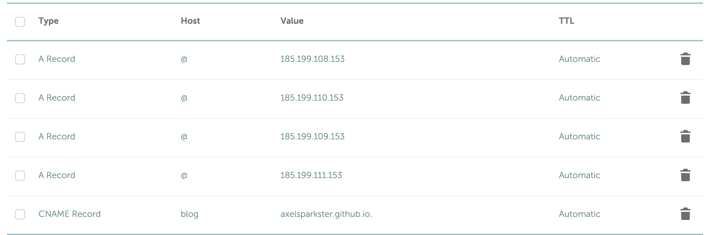

Adding an Apex Domain and Custom Subdomain on Github Pages
Officially, this is my first post on this blog! So, this is a little exciting.
One of my goals with this blog - like I mentioned in the About page - is to help people. And recently, I came across something I got stuck on… dealing with domain name setups. In particular, having one of my GitHub Pages repos to point towards an apex domain (example.com) and another towards a subdomain of the same domain (blog.example.com).
If you’re looking to get past the nitty gritty backstory and want to know how to set it up, just shoot down to the tl;dr section.
Context
As of the time I’m creating this post - I’m what I consider pretty much a beginner to web development. I went to ng-conf in beautiful Salt Lake City in 2019, but other than that, it’s really been mostly self learning since my job only primarily works with C#.NET and Visual Basic. To get myself familiar with web technologies, I’ve been making a personal website that I’m coding in Angular while also having a development blog in Jekyll on the side (this one).
Originally, I wanted to have these both be in the same repository, with the main Angular website being hosted at shootinginto.space and the Jekyll blog being hosted in a subdirectory at shootinginto.space/blog (don’t try clicking on that - it doesn’t exist!), but that presented some way more issues and more trouble than it was worth. So, instead, I followed the advice of some comments here and there and ended up making two GitHub repositories - one for the actual website, and one for the Jekyll blog.
Unfortunately, this meant that having the blog being a subdirectory of the domain wasn’t really a possibility (as two sites on Github Pages cannot share the same domain name). So, instead, I went for the subdomain approach, where I would have shootinginto.space and blog.shootinginto.space.
While setting up both repositories, I had some issues getting the domains to wire up correctly even though I had done a bit of extensive research. There wasn’t really much mentions of using apex domains (no “www”) and subdomains with the same domain. I had tried monkeying around and fiddling with the CNAME and A records to try to get the results I wanted - my apex domain was working just great with the documentation GitHub provided. The documentation for adding a subdomain was pretty good too, but even after making these changes, my subdomain still didn’t seem to work as intended. I noticed that setting up the A records for my subdomain exactly like my apex domain worked (with four A records pointing to GitHub Page’s IP addresses), but not the CNAME record.
I did some more poking into GitHub Pages’ documentation and found this:
Make sure your site does not:
- Use more than one apex domain.
For example, both example.com and anotherexample.com.
- Use more than one www subdomain.
For example, both www.example.com and www.anotherexample.com.
- Use both an apex domain and custom subdomain.
For example, both example.com and docs.example.com.
After reading the last bullet point, I was thinking, “Ugh, crap. Is this really not possible?” I was almost to the point where I would just keep the A records pointing at my subdomain and just forget about the CNAME record and just let GitHub annoy me with the yellow error saying that I shouldn’t be using A records for a subdomain. But, I decided to try one last time the following afternoon - I was in the office, and I decided to remove the A records for the subdomain and add back the CNAME record. I got a little bit carried away with my daily tasks, and about maybe half an hour later, I was like, “Wait, I still need to see if it works.” So I navigated to my subdomain… and it **worked**.
That was all it took - all I had to do was just wait a little longer.
So… looks like GitHub’s documentation isn’t exactly correct. An apex domain and custom subdomain are allowed. You just need to set it up correctly, and most importantly, just be patient.
For the exact fixes, read the next section.
How To (tl;dr)
- Create a CNAME file in the root directory of your project using your apex domain with only the apex domain. In my case, the CNAME for my apex domain only has shootinginto.space in it. See here.
- NOTE: To make this easier, GitHub can create this file and automatically commits it for you. Just open your repository, go to Settings -> Github Pages -> Custom Domain, enter your domain in the field and click “Save”.
- Create a CNAME file in the root directory of your other project using your subdomain with the complete subdomain. In my case, the CNAME for my blog has blog.shootinginto.space in it. See here.
- On your domain name provider’s site, set up your apex domain with the IP addresses for Github Pages. (You can verify that they’re the correct addresses by following the link.)
- NOTE: If you don’t know how to do this, for each of these records, create an A record, HOST value of @, and VALUE value of the IP address. Note this may differ between domain name providers - I personally used Namecheap.
185.199.108.153
185.199.109.153
185.199.110.153
185.199.111.153
- Set up your subdomain by adding a CNAME entry with “www” as the host value (yes, just www, not your subdomain prefix) and “
.github.io." with the value (put in your account's username - the end period is important!) - The most important part - wait. While most A record changes can be instantaneous, the CNAME records (for me, at least) took much longer to propagate.
Here’s a screenshot of my records, just as a reference:

If you have any questions of comments, feel free to add a comment, and I’ll try to help to the best of my ability.